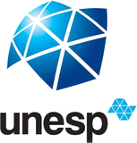
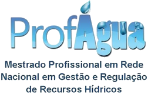
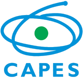
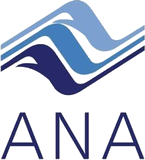

Monitoramento da universalização · URAE-1 · meta rural 2029
Saneamento nos quilombos de Barra do Turvo
Linha de base por comunidade · classificação PNSR · dados oficiais 2022–2026 · vistoria pendente
Camadas
Litorâneo · classe 1sLitorâneo · classe 2sPré-cambriano · classe 2fPré-cambriano · classe 3fPré-cambriano cárstico · classe 4f
0,730 a 0,759 · alto0,700 a 0,729 · alto0,670 a 0,699 · médio0,640 a 0,669 · médioParte de cada município dentro da UGRHI 11 · Brasil: 0,727
Mapa de fundo
Baixar o mapa
Clique num território para ver a situação da comunidade. Camadas: ITESP (territórios e municípios), DataGEO (UCs e sub-bacias), SP Águas (UGRHI), Serviço Geológico do Brasil (aquíferos), Atlas do Desenvolvimento Humano no Brasil (IDHM 2010, último ano com dado por município) e IBGE (limites municipais), CETESB (hidrografia; de longe aparecem só os rios com nome, e ao aproximar o mapa aparecem todos os cursos d'água). Role a página para a matriz PNSR com a ficha completa, o contexto do município e a exportação.
Adequado atende o PNSRA confirmar adequado se a vistoria ou o SISAGUA confirmarPrecário solução existe, mas inadequadaSem atendimento prática inadequadaSem dado lacuna
Passe o mouse ou toque em uma célula para ver o tipo de atendimento de cada domicílio e a regra do PNSR aplicada. A pílula mostra a situação da maioria dos domicílios; a barra e o "déficit" mostram o resto.
Contexto do município
O que os dados oficiais dizem sobre Barra do Turvo
Antes de olhar as comunidades, o retrato do município. Cada fonte oficial conta "atendimento" de um jeito, e por isso os números não batem. Nenhuma delas separa as comunidades quilombolas: todas ficam dentro da coluna "zona rural".
Meta do contrato da Sabesp para a zona rural de Barra do Turvo: 75% em água e 66% em esgoto em 2028; 99% e 90% de 2029 em diante. A meta é apurada para a zona rural inteira, nunca por comunidade, e conta poços e fossas sépticas admitidos em norma, que o SINISA não mede (URAE-1, 2024, Anexo II, p. 32-33).
Cinco critérios oficiais para o mesmo domicílio
Critério
Água: o que conta como atendido
Esgoto: o que conta como atendido
Escala
SINISA Ministério das Cidades
Só a rede da prestadora
Só a rede da prestadora
Município
ODS 6 ANA, com o Censo 2022
Água canalizada dentro de casa, de qualquer fonte; não mede potabilidade
Rede com tratamento, mais fossa séptica com peso de 40%
Município
Contrato URAE-1 Sabesp, ARSESP
Rede ou solução alternativa admitida em norma
Rede ou fossa séptica admitida em norma
Zona rural do município
PMSB Prefeitura, 2018
Rede ou solução alternativa
Rede ou fossa "adequada e em bom estado"
Município
PNSR · referência deste painel Funasa, 2019, Quadro 4.1
Água potável, de rede ou de poço e nascente com canalização interna, sem intermitência prolongada
Rede seguida de tratamento, ou fossa séptica; fossa rudimentar é precária; vala, rio e céu aberto são sem atendimento
Domicílio e comunidade
Levar para reunião
Exportar dados
O relatório abre no navegador e pode ser impresso ou salvo em PDF. A planilha abre no Excel ou no Google Sheets. "Copiar tabela" cola direto no Word ou no Excel.
Realização


Fomento


Apoio
Uso de inteligência artificial. Este painel foi desenvolvido com apoio do Claude (Anthropic), modelo Claude Opus 5.5, usado a partir de 19 de outubro de 2026. A ferramenta ajudou a escrever o código da página e do mapa interativo, a preparar as camadas do QGIS para a web e a revisar os textos. Os dados vêm das fontes oficiais citadas abaixo e não foram produzidos pela IA. As classificações seguem o PNSR (Programa Nacional de Saneamento Rural) e foram definidas pelo autor. Todo o conteúdo foi conferido pelo autor, que responde por ele, conforme a Portaria UNESP nº 125/2025.